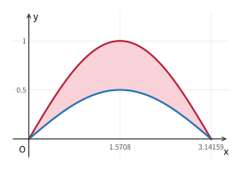
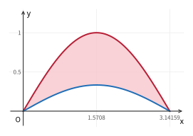
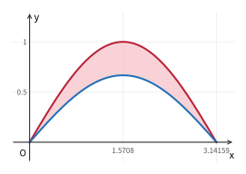

別冊練習問題 6 の解答 三角関数のグラフで囲まれた面積
(1) \(0\leqq x\leqq\pi\) で、曲線 \(y=\sin x\) と \(y=\dfrac{1}{2}\sin x\) で囲まれる図形の面積を求めよ。
上下の関係
\(0\leqq x\leqq\pi\) で \(\sin x\geqq\dfrac{1}{2}\sin x\)。

積分
\[\int_0^{\pi}(1-\dfrac{1}{2})\sin x\,dx=\dfrac{1}{2}\left[-\cos x\right]_0^{\pi}=\dfrac{1}{2}\cdot2=1\]
【答案】
\[1\]答
(2) \(0\leqq x\leqq\pi\) で、曲線 \(y=\sin x\) と \(y=\dfrac{1}{3}\sin x\) で囲まれる図形の面積を求めよ。
上下の関係
\(0\leqq x\leqq\pi\) で \(\sin x\geqq\dfrac{1}{3}\sin x\)。

積分
\[\int_0^{\pi}(1-\dfrac{1}{3})\sin x\,dx=\dfrac{2}{3}\left[-\cos x\right]_0^{\pi}=\dfrac{2}{3}\cdot2=\dfrac{4}{3}\]
【答案】
\[\dfrac{4}{3}\]答
(3) \(0\leqq x\leqq\pi\) で、曲線 \(y=\sin x\) と \(y=\dfrac{2}{3}\sin x\) で囲まれる図形の面積を求めよ。
上下の関係
\(0\leqq x\leqq\pi\) で \(\sin x\geqq\dfrac{2}{3}\sin x\)。

積分
\[\int_0^{\pi}(1-\dfrac{2}{3})\sin x\,dx=\dfrac{1}{3}\left[-\cos x\right]_0^{\pi}=\dfrac{1}{3}\cdot2=\dfrac{2}{3}\]
【答案】
\[\dfrac{2}{3}\]答